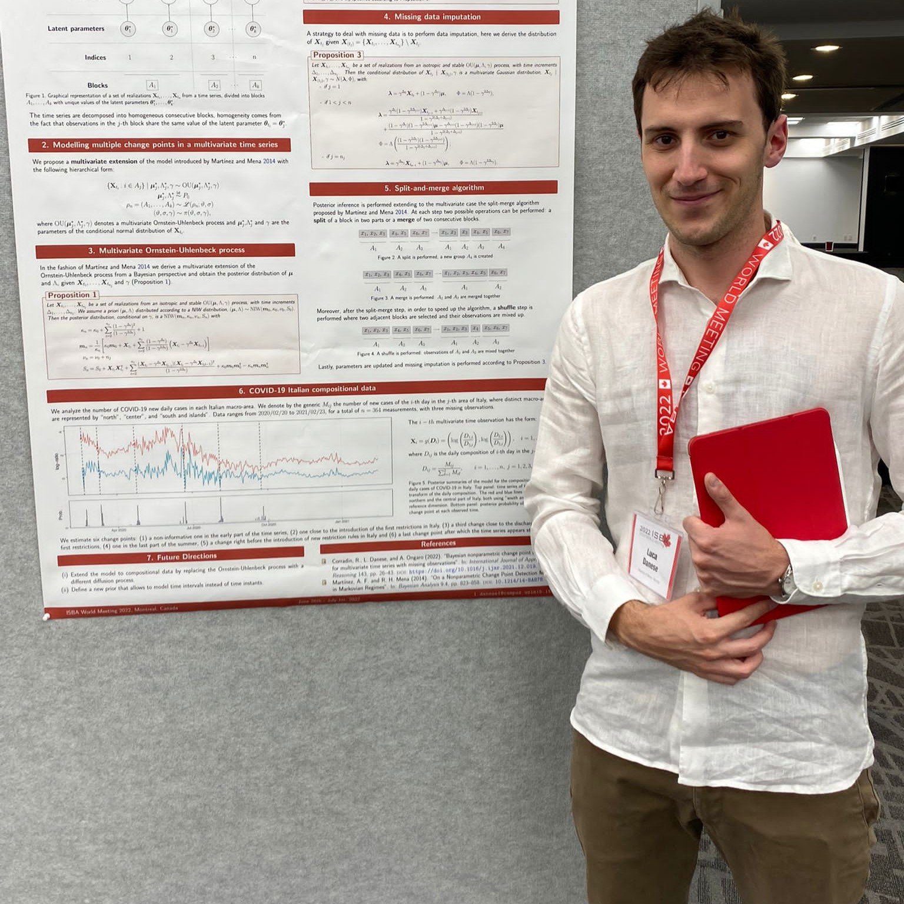

Elections y-SIS 2025 - Candidates
Elena Ballante
I am Elena Ballante, currently an Assistant Professor (RTD-A) in Statistics at the Department of Political and Social Sciences, University of Pavia. I obtained my Ph.D. in Computational Mathematics and Decision Sciences in 2021, where I worked on statistical and machine learning models applied to neuroscience. My main research interests lie in Machine Learning and Statistical Learning, with a specific focus on non-parametric and ensemble models. Over the years, I have had the opportunity to apply my methodological expertise primarily to biomedical research, as well as to projects in the social sciences, including linguistics, education, and socio-economic studies.
I have been attending SIS events for several years, which has given me the opportunity to meet many people working on topics both similar to and very different from mine. The exchange with them has allowed me to grow both personally and professionally, receiving support and opening myself to new ideas. Based on this experience, I believe that the role of y-SIS is crucial in connecting and supporting young researchers. It plays a fundamental part not only in fostering scientific growth but also in bringing together diverse ideas to drive innovation. At this stage, following some personal and professional changes, I feel I now have the time, enthusiasm, and professional maturity to meaningfully contribute to the y-SIS board. Moreover, my dual background, both theoretical and applied, allows me to communicate effectively across the different perspectives that constitute our academic community.
Luca Danese
I am Luca Danese, and I am currently completing my PhD in Statistics at the University of Milano-Bicocca under the supervision of Andrea Ongaro and Riccardo Corradin. I am also collaborating with the Università della Svizzera Italiana, in particular with Antonietta Mira and Stefano Peluso. My main research interests lie in Bayesian methodologies for clustering and change point detection based on random partitions. Recently, I have also started working on graphical models within a Bayesian framework. During my PhD, I spent six months at the University of Nottingham (UK), where I had the opportunity to collaborate with Prof. Wasiur R. KhudaBukhsh and to meet several other researchers with statistical and mathematical backgrounds. I also enjoy teaching — I believe it is the best way to learn. I have worked as a teaching assistant at different universities. You can find more information about me on my webpage: .
I would like to join the Young SIS board for two main reasons. The first is that I would like to become more involved with the Italian community of statisticians. I believe that one of the best parts of academic life is the opportunity to meet and exchange ideas with many people. By joining the board, I would have the chance to connect with others and share ideas within this community. The second reason is that I believe Young SIS plays a very important role within the Italian community of young statisticians. Starting an academic career can be challenging, and having a place where young researchers can support and learn from each other is truly important. I would like to give my humble contribution to continue the great work carried out by the previous and current board members.
Dalila Failli

I am Dalila Failli and I am a postdoctoral fellow at the Department of Political Science of the University of Perugia. I obtained my Ph.D. in Statistics in 2025 at the Department of Statistics of the University of Florence. My research interests focus on finite mixture models for clustering complex data, including extensions to network data analysis and approximate inference in latent variable models. More recently, my research has focused on Hidden Markov models and small area estimation methods. The main fields of application concern social and medical data.
I am interested in joining the board as I believe it plays a crucial role in fostering a dynamic and inclusive research environment that promotes the exchange of ideas and knowledge. I wish to contribute to initiatives that value and support young researchers and the societal impact of statistics.
Alice Giampino

I am a Postdoctoral Researcher in Statistics at the Department of Economics, Management and Statistics (DEMS), University of Milano-Bicocca. My research focuses primarily on Bayesian statistical methods for modeling high-dimensional data and time series, with particular emphasis on clustering and inference. I work on various projects involving the application of statistics across different fields, and I truly enjoy teaching statistics. I am passionate about sharing statistical knowledge and have taken part in several projects aimed at promoting Statistics among high school students. I also serve as a Research Fellow Representative at my Department, and I enjoy contributing to the academic community through collaboration and engagement in departmental activities.
I would like to express my interest in joining the y-SIS board for the upcoming elections. What truly motivates my application is my strong belief in the importance of an active, inclusive, and supportive statistical community for young researchers. I am eager to contribute to y-SIS, as I see it as a crucial platform for connecting early-career statisticians across disciplines, and cultures. I particularly admire the initiatives y-SIS has promoted to amplify the voices of young statisticians and to strengthen the link between different academic positions and career stages, fostering dialogue and mutual support within our community. Having been involved in several activities to promote statistics among high school students and serving as a Research Fellow Representative at my department, I am used to working in diverse, collaborative environments. I would be enthusiastic to bring this experience to y-SIS by helping organize events, and communication activities that make the section even more engaging and inclusive. I am deeply committed to giving back to the statistical community, and I believe that joining the y-SIS board would be a meaningful way to do so. I would be honored to contribute wherever my skills and enthusiasm are most useful. Thank you very much for considering my application and for all the valuable work y-SIS has done to support, connect and inspire young statisticians.
Giulio Grossi
Giulio Grossi is a postdoctoral researcher in Statistics and adjunct lecturer at the University of Florence. His scientific work focuses on causal inference, Bayesian methods, and policy evaluation in spatial and network settings. In recent years he has been a visiting scholar at the University of Florida and at the Harvard T.H. Chan School of Public Health. He coordinates the Causal Inference Group (CIG) in Florence, a forum for ongoing exchange between PhD students, early-career researchers, and senior faculty on causal inference, spatial methods, and policy-and public-health-relevant questions. This work is explicitly aimed at supporting junior scholars, lowering the barrier of entry to advanced methodological research, and fostering collaboration between statistics and applied disciplines. He is actively involved in the organisation and day-to-day life of the field: he has served on local organising committees for national and international conferences and workshops (EuroCIM, ICSDS, Statalk, BayesMeCos, Causal Inference Symposium), contributes to scientific programming, and has chaired thematic sessions on causal inference and synthetic control methods at ENAR, Statalk, and ACIC. On the training side, he teaches courses from the Master’s to the PhD level on policy evaluation, regression and statistical modeling, R programming, and causal inference for the social sciences. This teaching is conceived as scientific infrastructure: it is meant to equip young researchers from applied backgrounds with modern tools for credible causal inference. As an active member of IMS, ISBA, J-ISBA, SIS, Y-SIS, and the Florence Center for Data Science, he intentionally works across methodological and applied communities, advocating for the idea that statistics remains relevant only if rigorous methods, urgent empirical questions (public health, climate, inequality), and concrete policy needs are kept in conversation.
In recent years I have actively contributed to the Italian statistics community, especially within Y-SIS: I was a speaker at Statalk 2023 and I was part of the local organizing committee for Statalk 2024. These experiences allowed me to see up close not only the scientific quality, but also the collective, informal, and generous energy that Y-SIS has managed to build. I believe that today statistics has a clear responsibility: to produce credible, policy-relevant knowledge for real public problems, and at the same time to create spaces where early-career researchers can grow, present their work without intimidation, and build collaborations. I am running for the Y-SIS board because this is exactly what I want to work on: strengthening opportunities for young researchers to meet and connect; recognising and giving visibility to service work (organisation, teaching, junior support); and keeping Y-SIS as a place where rigorous statistical methodology and social impact stay in the same room. A lot has already been achieved, and I believe we can consolidate it and expand it.
Rocco Mazza

I am a researcher at the Department of Political Science of the University of Bari Aldo Moro. In this period I am working on aging and demographic transformations, with particular attention to the contribution of the foreign population to territorial age profiles and to the fertility-migration dynamics. I obtained my PhD in Social Sciences and Statistics in 2022 at the University of Naples Federico II. I coordinated a project for my university dedicated to demographic transformations and policy at the local level and I am part of the AGE-IT program as a researcher. I was on the organizing committee of: SIS 2024 (Bari); DSSR 2024 (Naples); JADT 2022 (Naples); CNDSS 2020–2021 (Naples). In this last year I contributed to the growth of GLASS, a laboratory of young researchers that has seen the organization of a rich calendar of events. In the teaching field, I hold doctoral courses on demography and quantitative methods at UniBa and summer/winter schools on social forecasting and composite indicators. I have been a SIS member since 2022 and a member of the USCI-SIS group, with a constant interest in initiatives that connect academia, PA and business on data-driven issues.
I decided to run for the y-SIS board because I believe in its role as a common home for the young people of SIS: a space that we can use as an opportunity for meeting, training and building a community with strong ties together. My experience in organizing initiatives for master students, PhD students and young researchers has taught me that accessible and participatory formats (short talks, practical workshops, peer mentoring moments) can strengthen the community and multiply the opportunities for collaboration between universities, PAs and companies. My motivation is twofold. On the one hand, I want to contribute with my time and my work to the calendar of the internal community, helping to take care of scientific quality, organizational continuity and the enhancement of skills (methods, data, tools). On the other hand, I like to imagine a y-SIS open to the outside world: dissemination initiatives, hybrid and participatory formats that bring students, professionals and citizens closer to statistical culture, also through partnerships with similar networks and territorial realities. The goal is to build a broad and inclusive network of young researchers, able to generate participation, impact and opportunities – inside and outside our community – through an active, shared and truly participatory dissemination of knowledge.